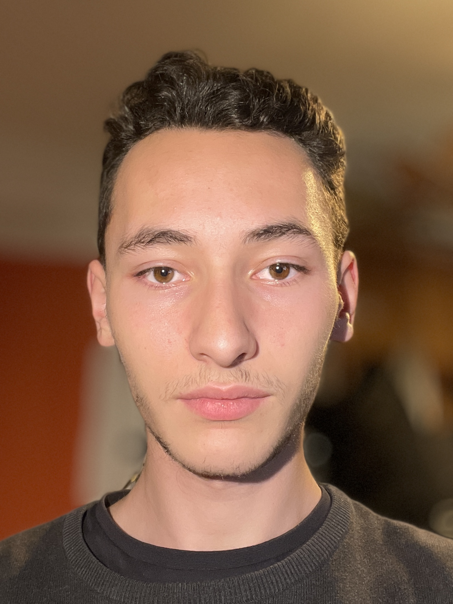

Bemutatkozás
Budapesten születtem a budai oldalon nőttem fel. Miután elvégeztem középiskolás tanulmányaimat a Pesthidegkúti Waldorf iskolában és sikeresen leérettségiztem 2021 elején, a Budapesti Műszaki és Gazdaságtudományi egyetemre jelentkeztem. Az egyetemen 2021 szeptemberére felvételt is nyertem Ipari Termék-és Formatervező Mérnök szakon.
Mi érdekel, Miket csinálok
Hobby szinten rengeteg minden érdekel. Régóta próbálkozom repülőmodellezéssel több-kevesebb sikerrel, szeretek fényképezni is és portfólióm elkészítése során a weblapszerkesztés is elnyerte tetszésemet.
Kicsit komolyabban foglalkozom 3D modellezéssel amiről majd a "munkáim" fül alatt olvashatnak. Legtöbb tapasztalatom a speciális tudást igénylő fizikai munkákban van, mivel itthon gyakran magunk kellett elvégezzük ezeket és volt ismerős mindig aki jó tanácsokat tudott adni. Gondolok itt ácsmunkára, asztalosmunkára, kőművesmunkákra és heggesztésre, mely a leginkább érdekel.